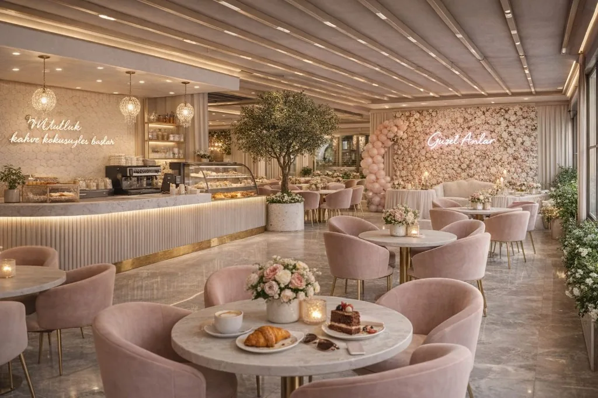

Bir soruyla başlayan yolculuk
“Antalya’da neden hem çıtır hem dengeli kruvasan yok?” sorusu bizim başlangıcımız oldu. O gün mutfağa girip aylarca denemeler yapacağımızı henüz bilmiyorduk.
Hikayemiz
Bir tariften fazlası: özenle inşa edilen bir lezzet kültürü.
“Antalya’da neden hem çıtır hem dengeli kruvasan yok?” sorusu bizim başlangıcımız oldu. O gün mutfağa girip aylarca denemeler yapacağımızı henüz bilmiyorduk.

Hamuru bazen fazla yorduk, bazen yeterince dinlendiremedik. Tereyağı seçimi, katlama aralıkları ve fırın dereceleri defalarca değişti. Her denemeyi not alarak reçetemizi adım adım geliştirdik.
“Premium olmak, pahalı görünmek değil; her gün aynı özeni gösterebilmektir.”

Kahve eşleşmeleri, servis hızı, tezgâh düzeni ve ambalaj hissi bir araya geldiğinde Point Croissant, tekrar gelmek isteyeceğiniz bir deneyime dönüştü.
Aynı disiplinle üretmeye devam ediyoruz. Her yeni tarif ve her geri bildirimle hikayemizi daha ileri taşıyoruz.